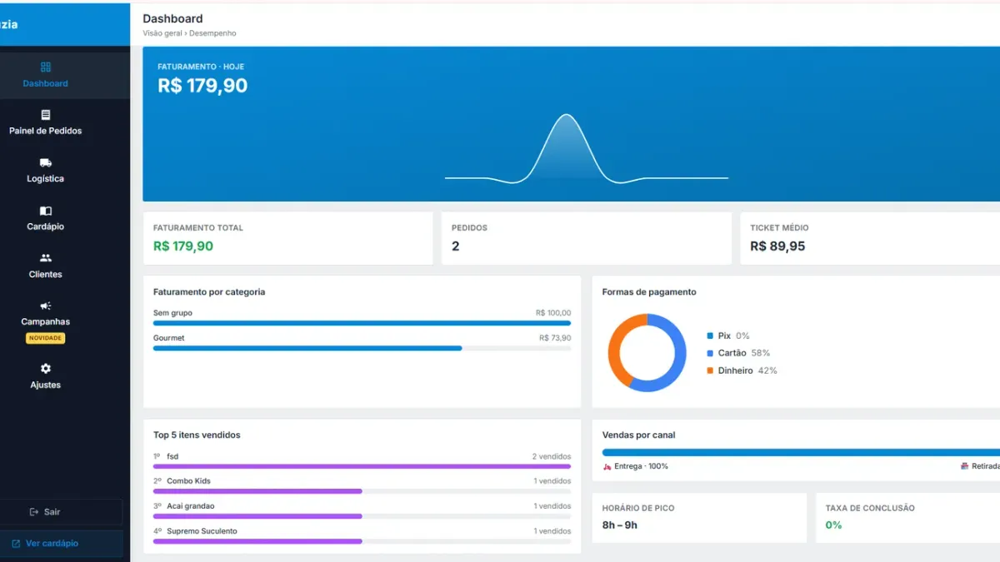

Como receber Pix no delivery com segurança (e evitar golpe)

O Pix virou a forma de pagamento preferida no delivery: cai na hora e não tem taxa de maquininha. Mas junto veio o golpe do comprovante falso. Veja como receber Pix com segurança e organizar o caixa.
1. Escolha a chave certa
- Use conta PJ (ou MEI) sempre que possível. Separa o dinheiro da loja do dinheiro pessoal e passa mais confiança.
- Prefira chave aleatória ou CNPJ em vez de CPF ou celular pessoal.
- O nome que aparece para o cliente na hora de pagar deve bater com o nome da loja — avise isso no cardápio para ele não estranhar.
2. Regra de ouro: confira no extrato, não no comprovante
Comprovante de Pix é imagem — e imagem se edita. O golpe mais comum é o cliente mandar um print falso ou de um Pix agendado que nunca cai.
Só libere o pedido depois de ver o valor no extrato do app do banco. Deixe o celular ou o internet banking da loja aberto no balcão, com notificação de Pix recebido ativada.
3. Sinais de alerta
- Comprovante com fonte, alinhamento ou horário estranho.
- Pix "agendado" em vez de "realizado".
- Cliente com pressa demais pedindo para liberar antes de cair.
- Pedido grande, primeiro pedido, endereço que não confere.
- Valor quebrado diferente do total do pedido.
4. Pix na entrega
Se o cliente vai pagar na porta, combine antes: o entregador leva a chave em QR Code impresso ou no celular e só entrega depois da confirmação da loja. Uma mensagem rápida de "caiu" no grupo dos entregadores resolve.
5. Identifique cada Pix com o número do pedido
Peça para o cliente colocar o número do pedido na descrição do Pix, ou confira pelo valor exato e horário. No fechamento, você bate Pix do extrato com os pedidos marcados como Pix e acha qualquer diferença em minutos.
6. Fechamento de caixa
No fim do dia, compare três números: total de pedidos pagos em Pix no sistema, total recebido no extrato e dinheiro em espécie com os entregadores. No Menuzia, o dashboard mostra o faturamento por forma de pagamento (Pix, cartão e dinheiro) e a tela de Logística tem o fechamento de caixa dos entregadores.
Por que vale incentivar o Pix
Sem taxa de maquininha, sem troco, sem nota falsa. Somado a um cardápio digital sem comissão, cada pedido pago no Pix chega praticamente inteiro no seu caixa. Muitos deliveries dão um pequeno desconto no Pix — faça a conta com a taxa que você deixaria de pagar no cartão.
Leia também: como configurar o WhatsApp Business (com resposta rápida da chave Pix) e como organizar a cozinha do delivery.
Perguntas frequentes
Como saber se o Pix caiu de verdade?
Confira o valor no extrato do aplicativo do banco. Nunca libere o pedido só com base no comprovante enviado pelo cliente, porque prints podem ser editados.
O que é o golpe do comprovante falso de Pix?
É quando o cliente envia um print editado, de outra transação ou de um Pix apenas agendado, para que a loja libere o pedido sem o dinheiro ter caído.
Vale a pena dar desconto no Pix?
Pode valer, porque o Pix não tem taxa de maquininha. Calcule a taxa que você pagaria no cartão e ofereça um desconto menor que ela.
Pare de pagar comissão por pedido
Tenha seu cardápio digital próprio por R$67/mês fixo. Nós configuramos pra você e damos todo o suporte técnico.
Criar Meu Cardápio Agora →